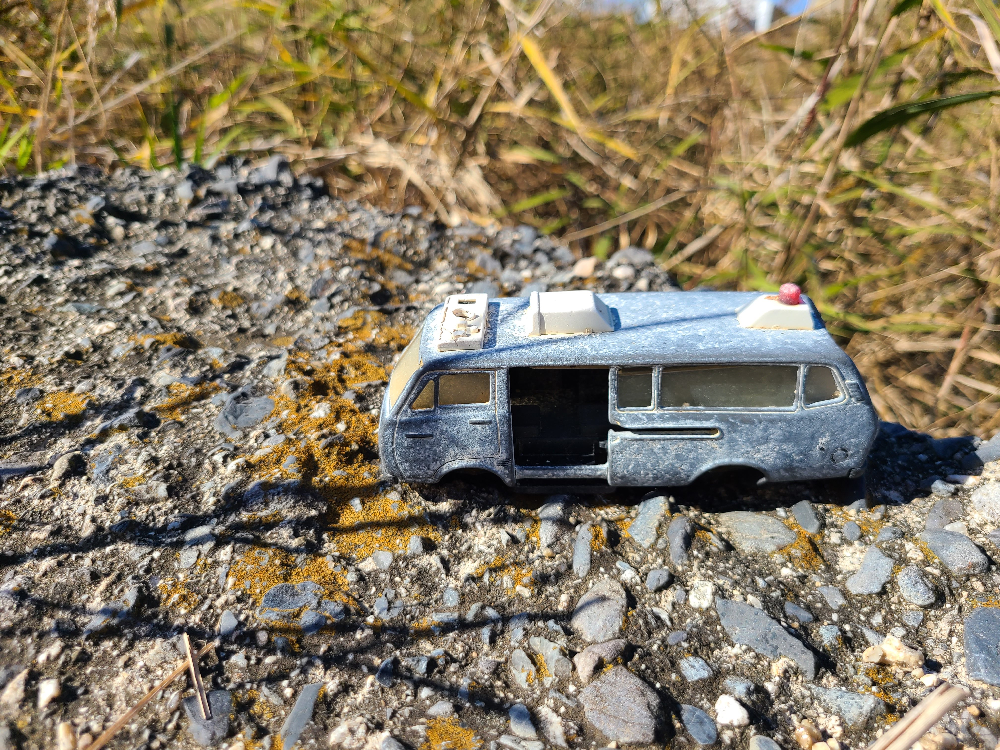

News
THIS IS TEST PAGE
- 11/20/2022 - 02/26/2023
- Shun Ikezoe "Waiting to hear from you 声を待つ" (sound design: Saruhiko Hayashi)
- 1st. MIMOCA EYE
- @ Marugame Genichiro-Inokuma Museum of Contemporary Art, Kagawa, Japan
- 11/05/2022
- Aya Kawazoe film "Night Train 夜の電車" (sound design: Saruhiko Hayashi) - webcast started
- kortfilm.be
more